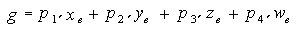
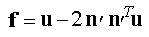
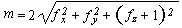
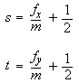

title: glTexGendv function (Gl.h) description: Controls the generation of texture coordinates. | glTexGendv function (Gl.h) ms.assetid: fe0e28e4-50d3-473f-a290-7745a1718618 keywords:
Controls the generation of texture coordinates.
void WINAPI glTexGendv(
GLenum coord,
GLenum pname,
const GLdouble *params
);
coord
A texture coordinate. Must be one of the following: GL_S, GL_T, GL_R, or GL_Q.
pname
The symbolic name of the texture coordinate generation function.
params
An array that contains the coefficients for the corresponding texture generation function.
This function does not return a value.
The following error codes can be retrieved by the glGetError function.
| Name | Meaning |
|---|---|
| GL_INVALID_ENUM | coord or pname was not an accepted defined value, or pname was GL_TEXTURE_GEN_MODE and params was not an accepted defined value. |
| GL_INVALID_OPERATION | The function was called between a call to glBegin and the corresponding call to glEnd. |
The glTexGen function selects a texture-coordinate generation function or supplies coefficients for one of the functions. The coord parameter names one of the (s,t,r,q) texture coordinates, and it must be one of these symbols: GL_S, GL_T, GL_R, or GL_Q. The pname parameter must be one of three symbolic constants: GL_TEXTURE_GEN_MODE, GL_OBJECT_PLANE, or GL_EYE_PLANE. If pname is either GL_OBJECT_PLANE or GL_EYE_PLANE, param contains coefficients for the corresponding texture generation function.
If the texture generation function is GL_OBJECT_LINEAR, the function
![Equation showing the glTexGen function when the texture generation function is GL_OBJECT_LINEAR.]
is used, where g is the value computed for the coordinate named in coord; p1, p2, p3, and p4 are the four values supplied in params; and x?, y?, z?, and w? are the object coordinates of the vertex. You can use this function to texture-map terrain by using sea level as a reference plane (defined by p1, p2, p3, and p4). The GL_OBJECT_LINEAR coordinate generation function computes the altitude of a terrain vertex as its distance from sea level; that altitude is used to index the texture image to map white snow onto peaks and green grass onto foothills, for example.
If the texture generation function is GL_EYE_LINEAR, the function
![Equation showing the glTexGen function when the texture generation function is GL_EYE_LINEAR.]
is used, where

and x?, y?, z?, and w? are the eye coordinates of the vertex, p1, p2, p3, and p4 are the values supplied in param, and M is the modelview matrix when you callglTexGen. If M is poorly conditioned or singular, texture coordinates generated by the resulting function can be inaccurate or undefined.
Note that the values in param define a reference plane in eye coordinates. The modelview matrix that is applied to them may not be the same one in effect when the polygon vertices are transformed. This function establishes a field of texture coordinates that can produce dynamic contour lines on moving objects.
If pname is GL_SPHERE_MAP and coord is either GL_S or GL_T, s and t texture coordinates are generated as follows. Let u be the unit vector pointing from the origin to the polygon vertex (in eye coordinates). Let n be the current normal, after transformation to eye coordinates. Let f = (fx ( ) fy ( ) fz)T be the reflection vector such that

Finally, let

Then the values assigned to the i and t texture coordinates are

You can enable or disable a texture-coordinate generation function by using glEnable or glDisable with one of the symbolic texture-coordinate names (GL_TEXTURE_GEN_S, GL_TEXTURE_GEN_T, GL_TEXTURE_GEN_R, or GL_TEXTURE_GEN_Q) as the argument. When this function is enabled, the specified texture coordinate is computed according to the generating function associated with that coordinate. When this function is disabled, subsequent vertices take the specified texture coordinate from the current set of texture coordinates. Initially, all texture generation functions are set to GL_EYE_LINEAR and are disabled. Both s plane equations are (1,0,0,0); both t plane equations are (0,1,0,0); and all r and q plane equations are (0,0,0,0).
The following functions retrieve information related to glTexGen:
glGetTexGen
glIsEnabled with argument GL_TEXTURE_GEN_S
glIsEnabled with argument GL_TEXTURE_GEN_T
glIsEnabled with argument GL_TEXTURE_GEN_R
glIsEnabled with argument GL_TEXTURE_GEN_Q
| Requirement | Value |
|---|---|
| Minimum supported client | Windows 2000 Professional [desktop apps only] |
| Minimum supported server | Windows 2000 Server [desktop apps only] |
| Header | Gl.h |
| Library | Opengl32.lib |
| DLL | Opengl32.dll |